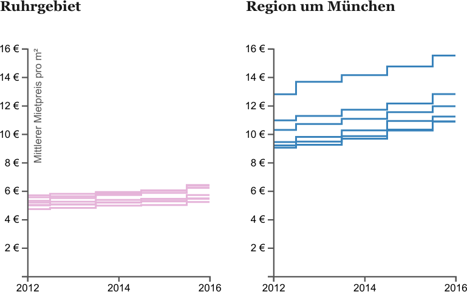
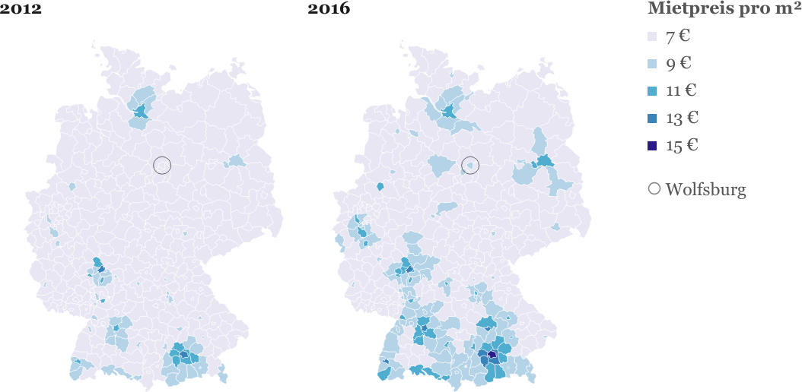

Vermieter müsste man sein: In ganz Deutschland klettern die Mietpreise rasant
Hinweise zur Nutzung unserer Mietpreis-Grafiken.
Kontakt: simon.woerpel@correctiv.org
Credits: "Grafik: Simon Wörpel, correctiv.org"
Wichtig: Wenn Sie die Daten und die Recherche veröffentlichen, achten Sie bitte darauf, die im Text genannte Quelle der Daten (Forschungsinstitut Empirica) zu nennen, denn nur unter dieser Bedingung hat Empirica uns die ganzen Daten zur Auswertung zur Verfügung gestellt.
SPERRFRIST Freitag, 7.4.2017, 18.00 Uhr (online) und Samstag, 8.4. für Print.
Interaktive Mietpreis-Karte
Sie können unsere interaktive Karte mittels eines <iframe>-Elements in Ihre Artikel einbinden. Nutzen Sie dazu dieses Beispiel:
<iframe width="750" height="736" src="https://correctiv.github.io/rent-prices-germany/rents-map-iframe.html"></iframe>
Die Karte passt sich an die Breite des iFrames an, ist aber nie breiter als 750 Pixel (inklusive Legende & Infobox rechts). Zudem wird für kleinere Screens (Smartphones, Tablets) eine mobil-optimierte Version angezeigt.
Vergleich Ruhrgebiet und Region um München
Nutzen Sie diese Grafik als Bild: https://correctiv.github.io/rent-prices-germany/img/correctiv-rents__ruhr-muc.png
{kind=link}
Ruhrgebiet: Herne, Oberhausen, Essen, Gelsenkirchen, Duisburg, Bochum, Dortmund
Region um München: München, Dachau, Ebersberg, Fürstenfeldbruck, München (Kreis), Starnberg
Mietpreisentwicklung von 2012 bis 2016
Nutzen Sie diese Grafik als Bild: https://correctiv.github.io/rent-prices-germany/img/correctiv-rents__years.png
{kind=link}